Explore the Journey !
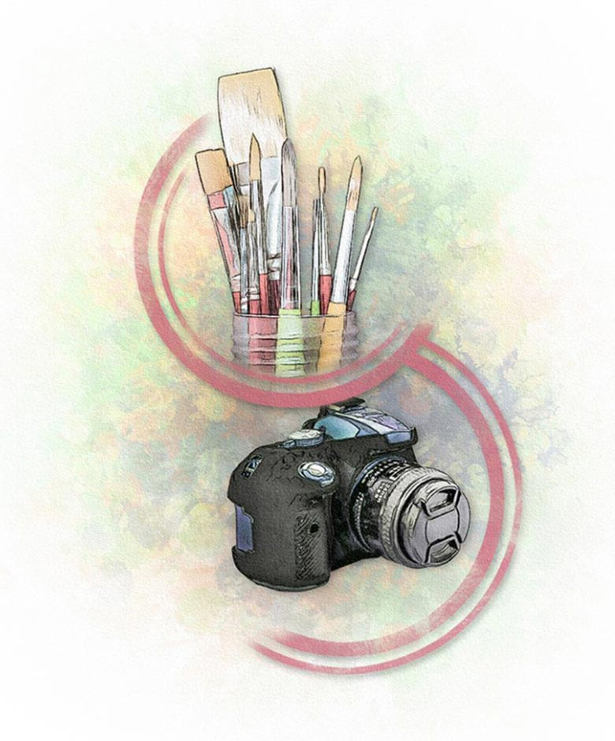
Both painting and photography are respected art mediums. When well-executed, a photograph or painting can be beautiful, emotional, and powerful. In this article, we’ll explore the similarities and differences between painting and photography.
A painter uses paint to create an image, while a photographer uses light. Light cannot be mixed or manipulated in the same ways that paint or pigments can, but a photographer can manipulate light work within its limits.
Painting
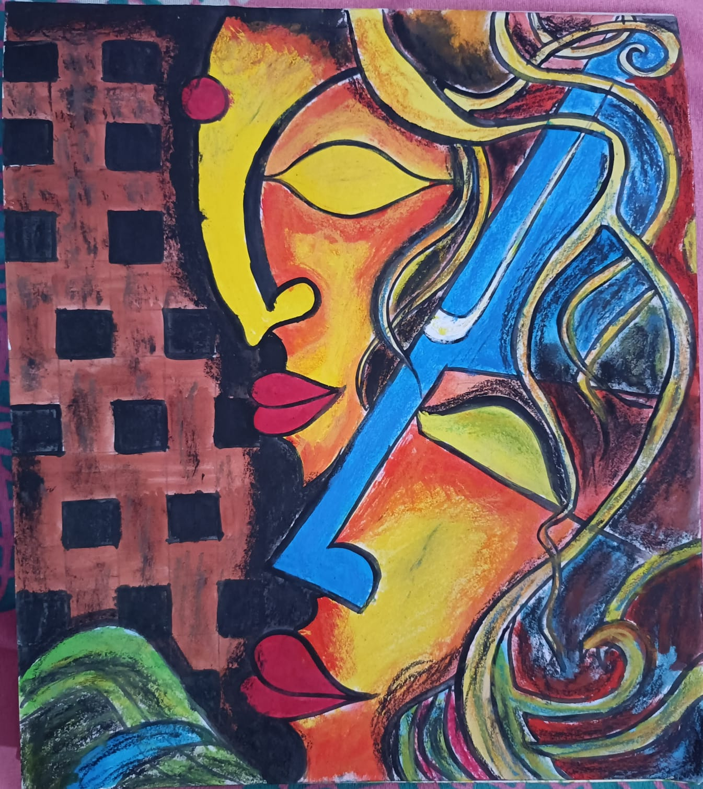
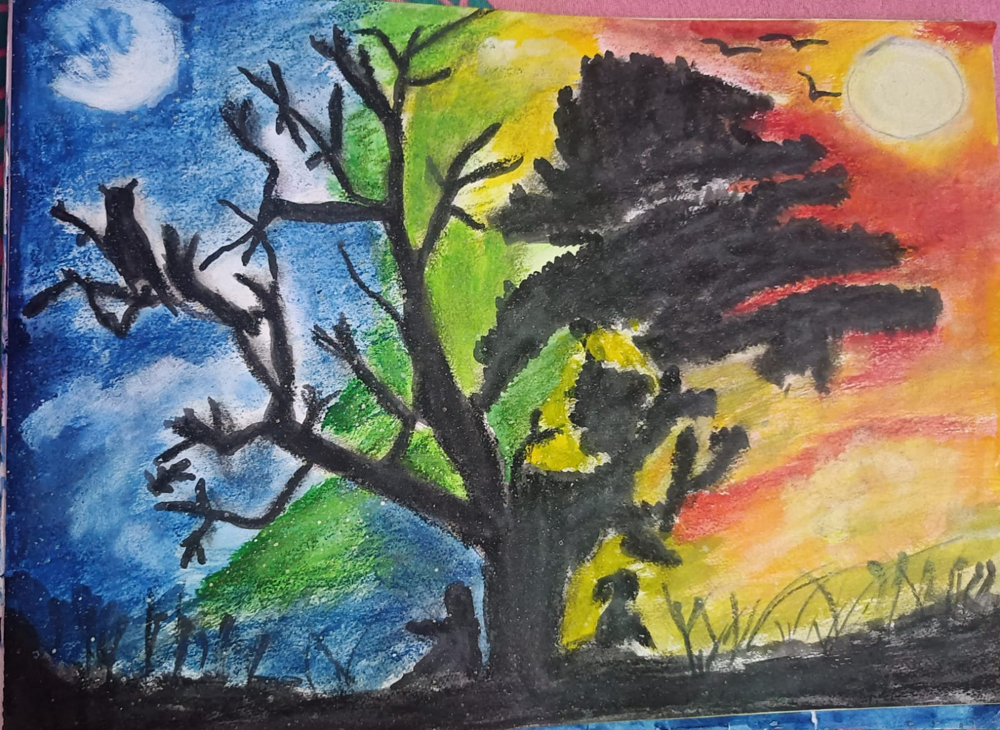
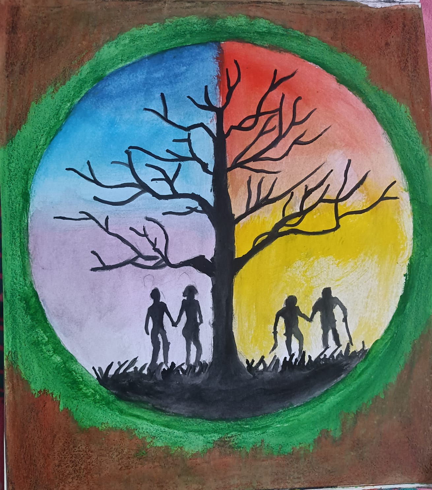 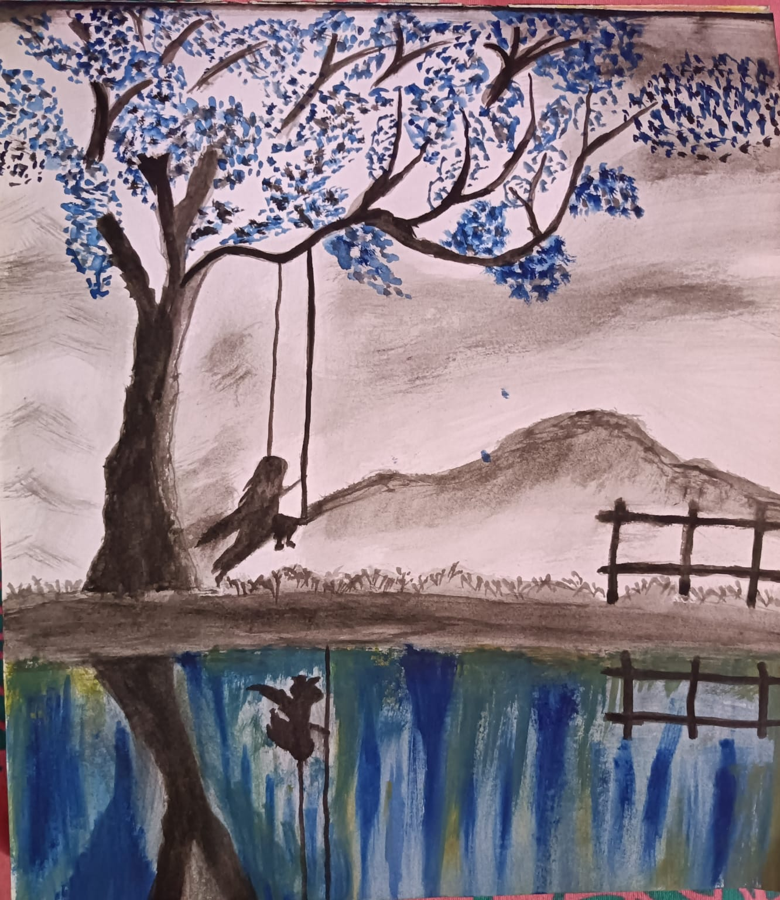
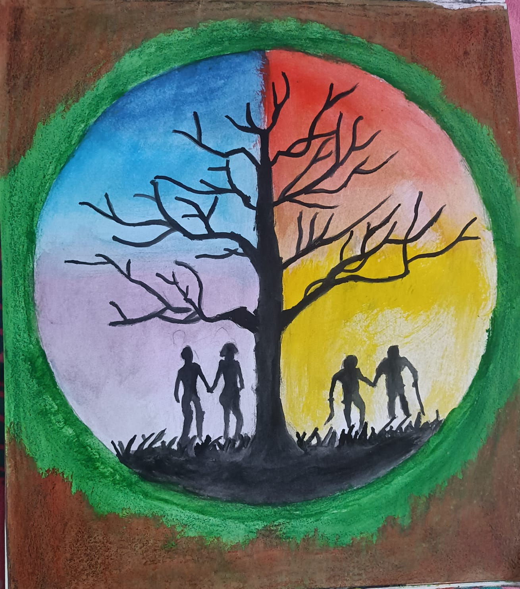 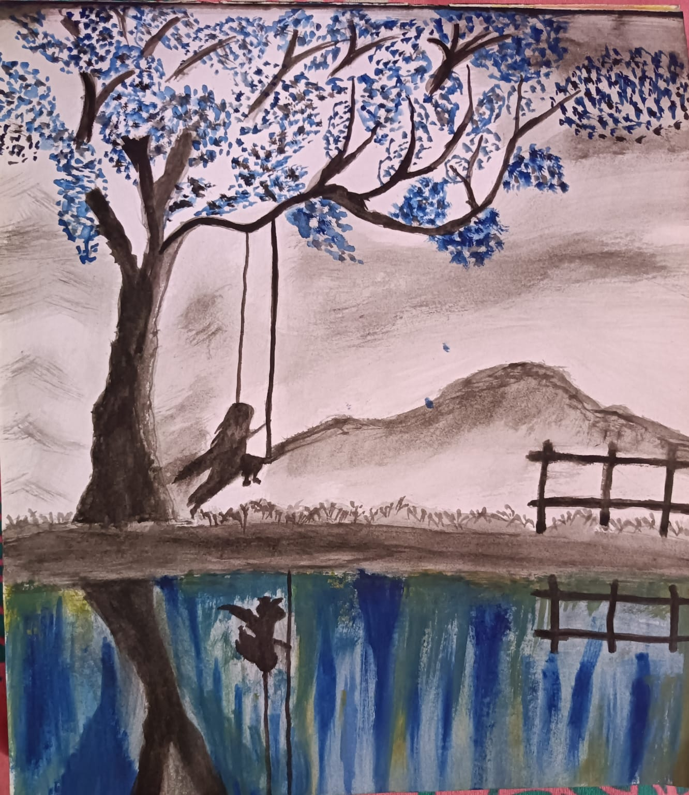
Photography
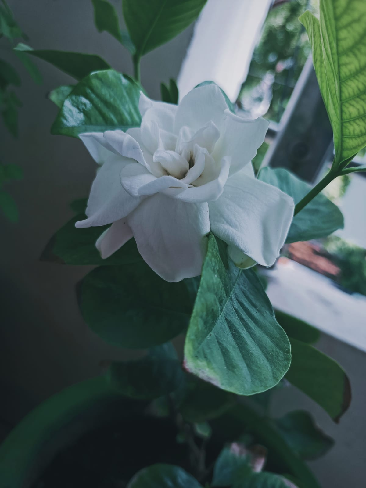
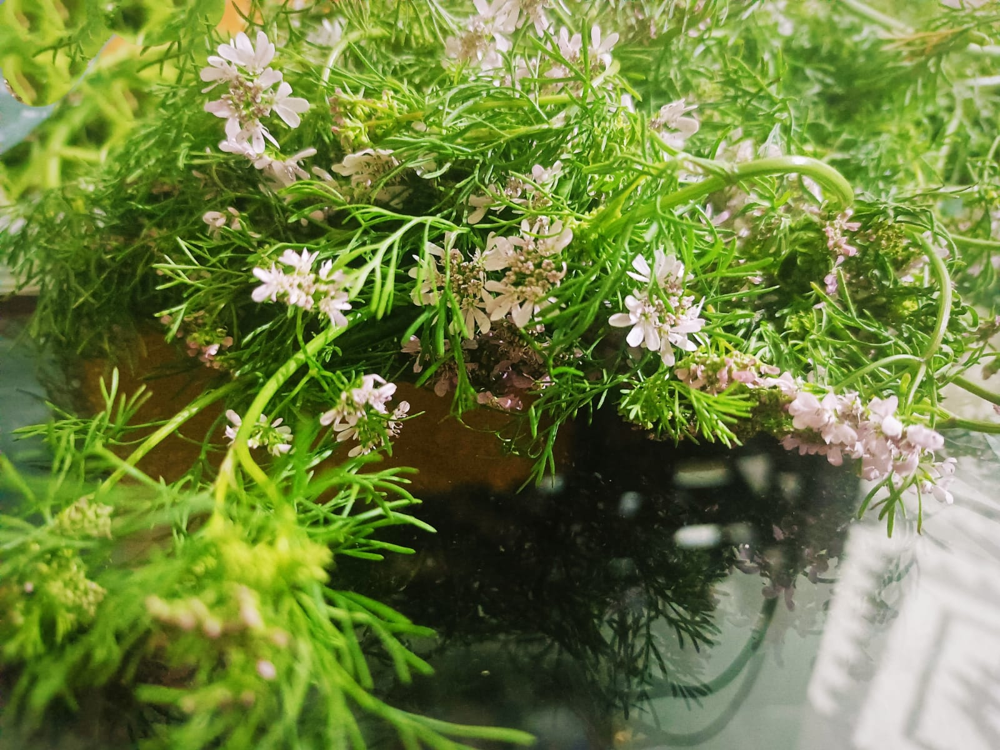
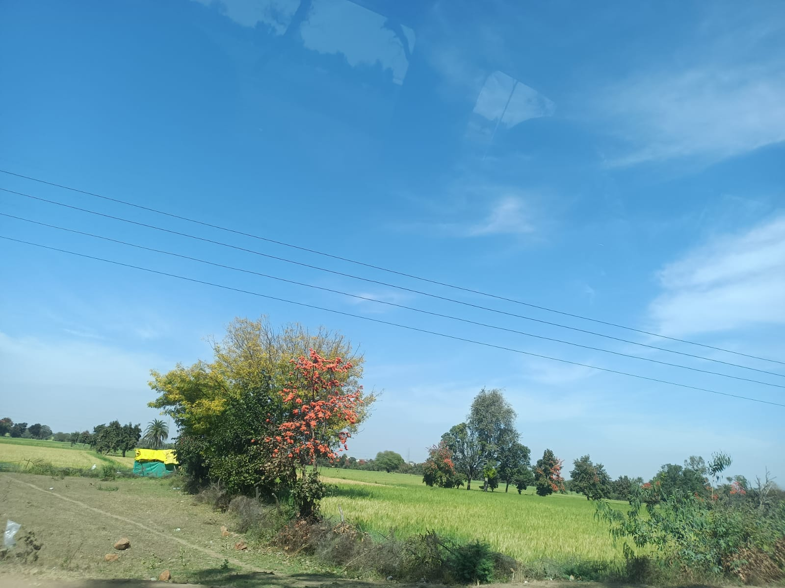 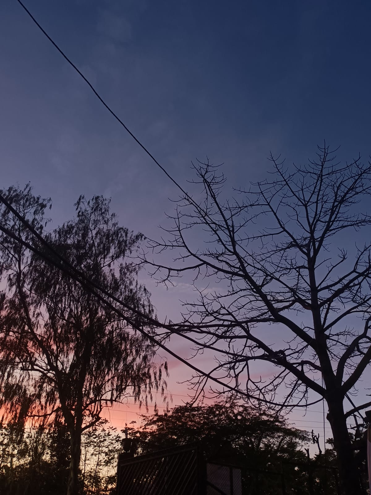
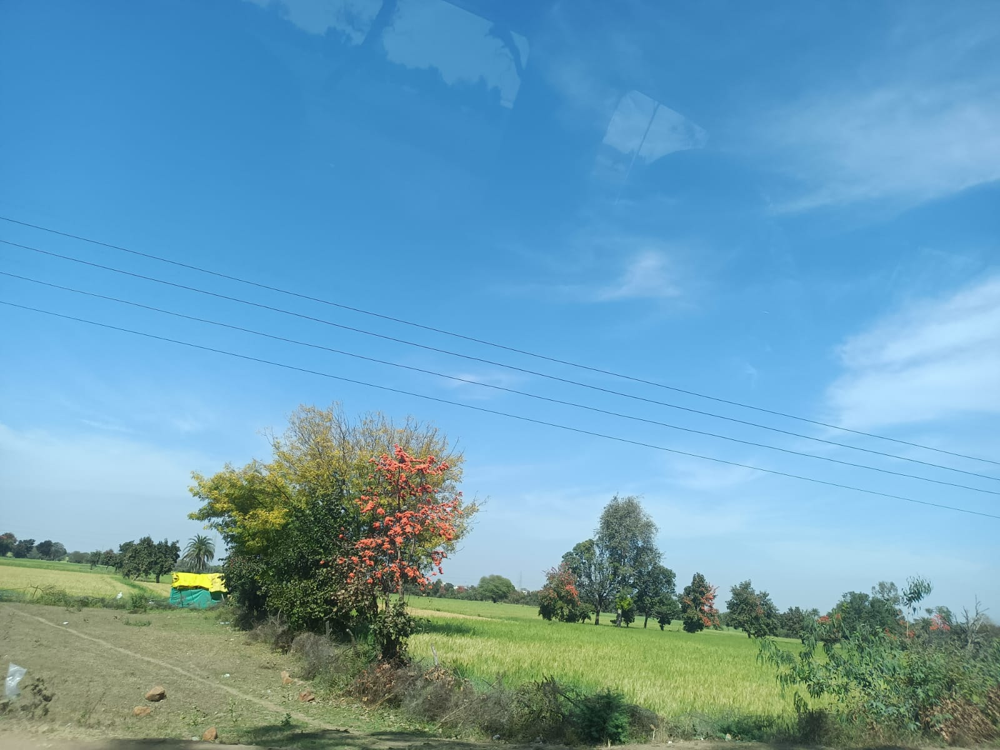 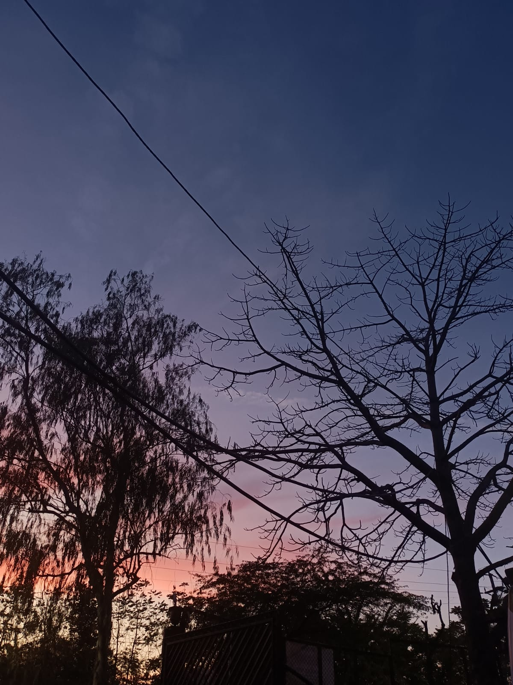